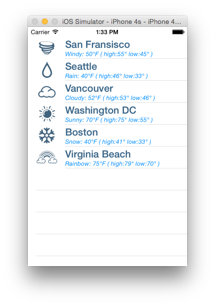

Duration
10 minutes
Goals
The primary goal of this exercise is to customize the appearance of the default table view cells.
Required assets
The provided Part 01 Resources folder contains a starter solution as well as a completed solution you can use to check your work. Please make sure you have this folder before you begin.
Challenge
You'll start with an existing application that has a UITableViewController defined in the designer. Currently it's using the default cell style to display a single line of text. You're going to change the cell style and then customize the appearance.
- Inspect the starter solution in the Part 01 Resources folder.
- Recall the different cell styles that come out of the box with iOS table views. Change the Table View to display a subtitle.
- Set the ImageView property to display the weather icons.
- Customize the font style and color of the cell.
Steps
Below are the step-by-step instructions to implement the exercise.
Inspect the starter solution
Open the starter solution in the Part 01 resource folder and run the application. It works but it's not very visually appealing.
Change the Table View to show two lines of text
Change the GetCell method to use the Subtitle cell style.
- Open the WeatherTVC.cs.
- Scroll down to the
GetCellmethod. - Change the cell style to "Subtitle" and show the city name and current conditions using the
TextLabelandDetailTextLabelproperties.
Show the Weather Icon
Show an icon for the weather using the ImageView property on the table view cell.
Inspect the Resources folder of the project.
Notice that a number of png weather assets have already been added.
- Open the WeatherTVC.cs.
- Scroll down to the
GetCellmethod. - Display the appropriate weather icon using the
ImageViewproperty. The weather icon names match theConditionsenum used in the Weather model class.
Customize the Text
The TextLabel and DetailTextLabel properties on the table view cell are standard UILabel views.
We can change their properties just like we would with any other UILabel.
-
Change the font size and colors (RGB: 59, 102, 136; RGB: 0, 142, 255) of both
UILabels.
Summary
Congratulations! You have sucessfully customized a default table view cell style.